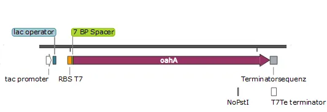
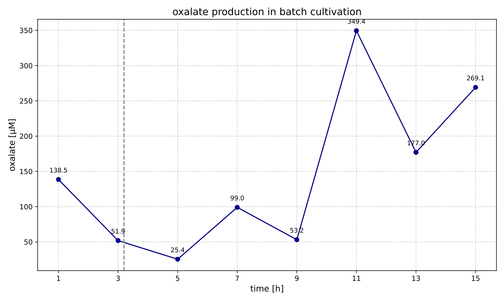

Contribution
Find out how our project contributes to the iGem competition and the world. To support future iGem teams and scientists, we've compiled information on our part contribution and oxalate assay.
BioBrick
oahA_CG
Parts ID: BBa_25Z0PIGD

Our Biobrick oahA_CG was developed to insert the expression of oxaloacetate hydrolase into our host organism. This allows oxalate to be formed from oxaloacetate, an intermediate of the TCA cycle.
The part is based on the oahA-gene from Aspergillus niger. The sequence was codon-optimized for Corynebacterium glutamicum and provided with a ribosome binding site, a His₆ tag, and a terminator.
The functionality of the part was tested in Corynebacterium glutamicum ATCC 13032. Using the commercially available oxalate assay kit MAK315-1KT from Sigma Aldrich, we were able to confirm the successful production of oxalate. This is a metabolite that the wild type cannot produce without genetic modification. Our Biobrick thus expands the metabolic capabilities of the host organism.

The part is fully documented and submitted to the Registry of Standard Biological Parts. It enables the iGEM community to introduce oxalate production into their own organisms. As an organic acid, oxalate has a wide range of applications and can also serve as a starting metabolite for further metabolic pathways.